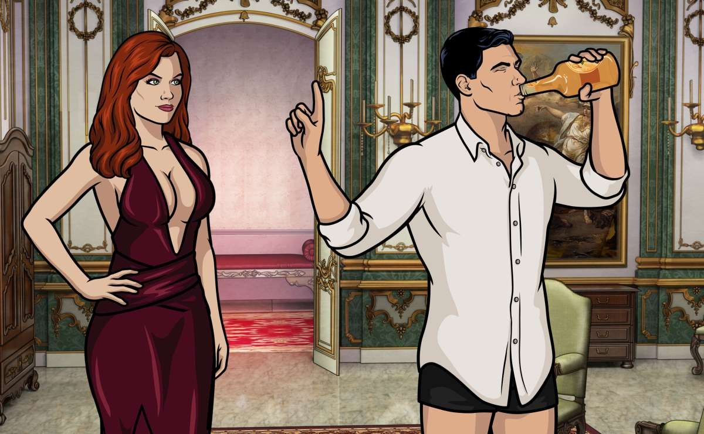

About Stirling Archer
The worlds best super spy, untouchable, unkillable, smells like whiskey and bad decisions.
Archer making yet another bad decision
- He's a smooth talker
- He's a great listener
- He's the worlds best secret agent, minus the secret.
Archer's Groupies
Archer has a few collegues from work. His closest of the group being cyril of course. Click on the links below to read more about his buddies.